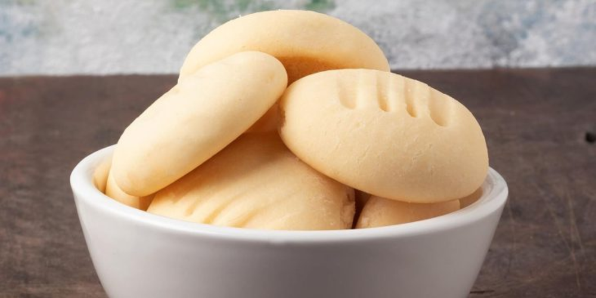

Receita de Biscoito de Maizena com Leite Condensado
Uma receita simples e deliciosa que derrete na boca. Esses biscoitos de maizena com leite condensado têm uma textura leve e amanteigada, com um toque de doçura irresistível. Perfeitos para acompanhar um café ou chá, eles são práticos de fazer e um sucesso garantido para qualquer ocasião.
Tempo de preparo
- Total: Aproximadamente 25 minutos
- Preparo: 10 minutos
- Cozimento: 15 minutos
Ingredientes
- 500g de amido de milho
- 200g de manteiga
- 1 lata de leite condensado
Modo de Preparo
- Em um recipiente, junte a manteiga, o amido de milho e o leite condensado.
- Misture usando uma colher e depois com as mãos.
- Trabalhe a massa de biscoito até que ela fique bem lisa e homogênea.
- Quando obter a massa, faça bolinhas, achate-as e amasse elas com um garfo.
- Em seguida coloque os biscoitinhos numa forma untada, deixando um espaço de aproximadamente 2 centimilímetros de um para o outro.
- Leve para assar em forno baixo, pre-aquecido a 180º por cerca de 15 minutos ou até dourar em baixo.
- Retire do forno e aguarde esfriar.
Nutrição
A tabela abaixo mostra os valores nutricionais aproximados por porção.
Calorias
404kcal
Carboidratos
60g
Proteína
3g
Gordura
21g

Desafio do Frontend Mentor
Desenvolvido por Ananda Shayla